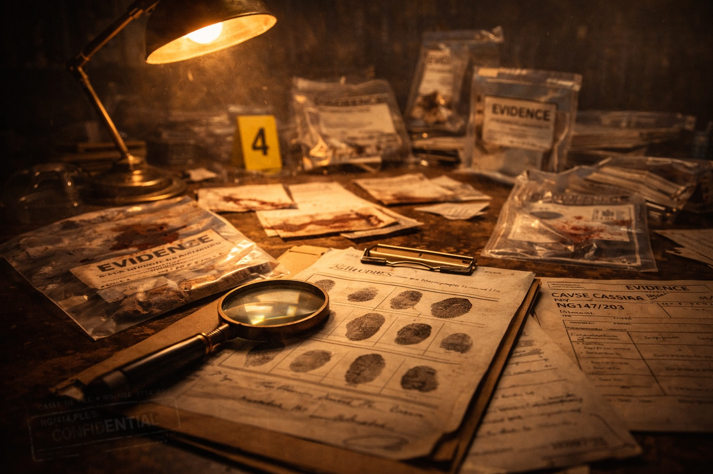

After serving his prison term, Raymond Martin Marshall was back bouncing around the historic, picturesque market town of Newark-on-Trent. Within six months, he found himself back in a dock charged with another ‘conspiracy to supply class A’ offence. There would be no tossing of coins to resolve the outcome of this cocaine trial.
Ray was held in HMP Leicester. I saw him a number of times before the case papers were served - he had lost none of his humour, exuberance or fearlessness. He had, from the outset, alleged the police had set him up - scarred from their last encounter with him. He was charged along with a drug gang from Leicester. It was the main man’s house he had travelled to, down the A1, when the police swooped on their targets. The main man was absent, but the drugs were not. The police claimed this man was on the run, but Raymond smelt a rat.
I regret, my eye had been taken away from the trial preparation as my practice blossomed with weighty cases. Raymondo is not demanding, or prone to complain. However, after a phone call from prison, I was concerned enough to ask to see his file.
I had assigned a female solicitor to R v Marshall, and my bellybutton assessed she had fallen for Ray’s many charms. The file disclosed no attack on the police, and we had made few requests for disclosure. “Counsel has advised Ray needs to keep low in the water“, came my employee’s firm response. “Well, counsel has been sacked. Colin Campbell is to conduct the trial.“
This shocked the lawyer sitting in front of me, who, despite my position as her employer, felt my sudden intervention was unwarranted and damaging to the client. “That will be all“, I indicated, signalling for her to leave my office. She would take no further part in the case, save for handing me a note, an hour later, in which she formally criticised my conduct. I filed it.
Colin Campbell is a Glaswegian dragged up in the Gorbals. A barrister best avoided, or one of the best advocates of his generation – depending on whose views you canvassed. What was not in doubt was Colin was a fighter, and liked nothing more than a dustup with a judge. He had fallen on hard times, and his home and business life were in tatters. Yet, any barrister who is alleged to have shouted, down a Holiday Inn corridor at 1 am:
“My best friend has stolen my hooker and my hooker has stolen my cocaine”, is a man I needed to meet.
It is not part of a defence lawyer’s role to fund defence counsel to get him to the door of the trial court. But I found myself paying for his train ticket, his hotel room and buying him a pay-as-you-go phone, with credit on it, to enable contact between us!
I assessed Colin would not be a counsel anally attached to the minutiae in R v Marshall. He would prefer to have the bullets loaded for him, and then he would discharge them in the court room to an enraptured jury. There is no point in pursuing serious allegations of police misconduct if defence counsel is going to whisper them to a jury, half-embarrassed at the instructions he has been handed by a belligerent Blackpudlian.
Ray would have his day in court. He was not an individual who suits keeping a low profile. A defence rooted in cowardice was bound to fail. I accepted, as did Colin, our intended, bold approach would result in Ray‘s previous drug conviction being placed before a jury. “So what?“ Colin growled. “They don’t set up men without a past.” With this chain of command in place, there would be no blinking – “no fear” was Colin’s mantra - a man who could complete The Times’ crossword in 20 minutes.
I established from Ray a rather startling fact – he had received an offer of employment by the NCS! Two officers, in smart suits and flashing Rolexes, had attended, unannounced, at HMP Leicester. Ray, being on alert to unannounced visits, had asked his prison guard to remain in the room whilst this conference took place. These fine officers indicated Ray could continue the drug trade and they would ensure “safe“ transport of class A drugs from the Continent. They would simply ‘mop up’ the crooks who Ray dealt with – leaving him in place. Further, the trial at Leicester Crown Court would disappear on a technicality. What largesse!
Ray thanked them for attending, refused their kindly offer and asked the guard to take him back to his cell. Well, Mr G and Mr C needed no encouragement - we would parade this sordid history before the jury. We would give the trial judge and Crown counsel no advance warning. Mr C would explode this prison ‘back door entry’ in cross examination with the OIC.
The time arrived when Mr C rose to his feet, smiled at the jury and then asked the officer to identify the two senior policemen who had attended HMP Leicester. The officer stuttered, and gave a frightened look towards the judge. “Need help officer?” spat out Mr C, making it clear to the jury the judge would be a part of the cover-up. “Well?” continued Colin, as the judge attempted to quell any further questions on this sensitive visit, which was never intended to play out in open court.
Far from obeying, Mr C ‘fronted up’ the judge. “If, Your Honour, Prince Charles visited your local prison, there would be a record of it. If justice demanded he testify as to the purpose for his entry into one of Her Majesty‘s prisons, he would be duty-bound to do so.“ Colin glanced at the jury, who returned his look with wide eyes and fulsome smiles.
“Usher – take the jury out – I want to speak to both counsel in their absence.“
The damage had been done. Mr C had the jury in the palm of his Glaswegian mitt – there was a smell of suppression and corruption in the air, not helped by the fact Crown counsel, Mr Wigeter, was a public-schoolboy-type – bookish, boring and bludgeoned by Colin’s daring advocacy.
The jury filed back in 30 minutes later, and Colin moved on from the offer of employment in the knowledge that, during the presentation of the defence case, he would be calling none other than the jailer to testify as to the truthfulness of the visit. Yet, Raymondo felt the need to step into the fray and, shortly before 4 pm, he rose on his 6 feet 2 frame and delivered a less-than sanitised address of his own.
He, firstly, set about the judge. He informed the 12 members of the jury the judge was a man who “fiddles with little kids“ and who “wears suspenders under his robes“. He delivered a few more outlandish comments, before he pointed at Crown counsel:
“And you”, Raymondo shouted, “you were called Wigeter because you have a small dick.”
The judge called for calm. He demanded Ray halt his ramblings as he was “frightening the jury”. However, it was clear by their smirks they had much enjoyed Ray’s outburst. It was better than any movie scene they had watched.
In the jury’s absence, the judge gave the accused an ultimatum. “Another outburst such as that, Mr Marshall, and you will spend the rest of the trial in the cells.“ The judge then demanded Mr C speak to his client, to ensure there would be no repetition of misconduct. Mr C was more likely to shake Ray’s hand. “I will adjourn the case until 10.30 tomorrow.“
A new day dawned, and at 10:30 the jury re-entered a calm court room. As the judge asked the usher to bring in the next witness, Ray rose to his feet once more. There was an intake of breath from all present, but, far from more slander, from the dock came a fulsome apology. Ray, beautifully, caged his grovelling apology in the fact this was what he had been reduced to, by the police setting him up and bringing false charges. It was a command performance, much loved by the jury. No sooner had Ray sat back down, his head popped back up to announce “But you, Mr Wigeter”, pointing at Crown counsel, “you still have a small dick.“
The trial rumbled on without further intrusion from Ray. The defence case opened, and in walked the prison guard. He was a reluctant witness, but this honourable man, with an impeccable record of 20 years’ public service, would not lie. You could hear a pin drop as this officer recounted the State’s offer of employment to this alleged gangland figure.
In cross-examination, Wigeter’s intellect matched his alleged penis size, when he put to this fine officer, with an unblemished career history, “Are you in Mr Marshall’s pay?“ Colin glanced at the jury, and their faces portrayed members of the public who would not submit to copulation by higher vertebrate flashing a widget.
After closing speeches, and a robust summing up from the judge citing the evil of drugs and those peddling them, the jury took all of 40 minutes to return a unanimous verdict of ‘not guilty’.
Keeley would, once more, kill the fatted calf and await her hero’s return to the bosom of Newark. Meanwhile, Colin and Ray would double the week’s takings of a hostelry close to the courthouse.
I, for my part, had my female lawyer’s note of criticism framed, and placed it on her desk with one word endorsed upon it:
“Noted.”
Page 1 of 1